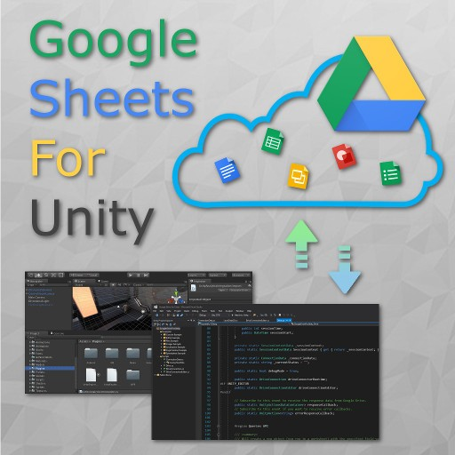
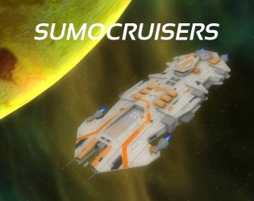
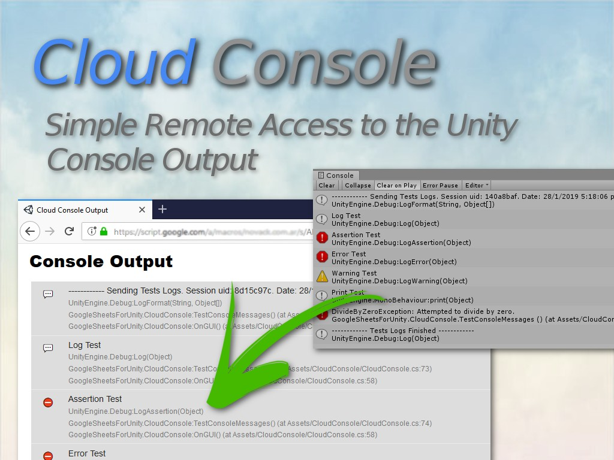
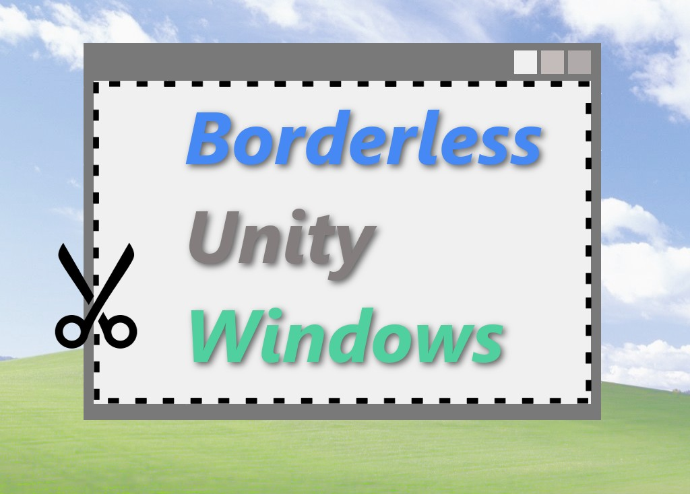

Google Sheets for Unity ↗
A bridge between Unity and Google Sheets. Read and write spreadsheet data, work with Drive files, and bring familiar tools into a game’s workflow.
Explore the tool on itch.io ↗A place for my own creations. Useful little tools, playable ideas, and things made for the joy of figuring them out.
Take a look around

A bridge between Unity and Google Sheets. Read and write spreadsheet data, work with Drive files, and bring familiar tools into a game’s workflow.
Explore the tool on itch.io ↗One cruiser against another. A small experiment in real-time strategy, with short battles and time as your resource. Production, design, and development by me.
Play the prototype on itch.io ↗
A way to read Unity’s console output from a web browser. Connect a running game to a service hosted on Google Drive and follow its logs remotely.
Explore the tool on itch.io ↗
A small package for frameless Unity apps on Windows. Drag, minimize, maximize, and restore the window from code.
Explore the tool on itch.io ↗Make something.
Understand it.
Make it a little better.
I like the space where an idea becomes something you can use or play. Sometimes that means a game. Sometimes it means a small tool that makes another task easier.
Craft, to me, is in the attention: asking questions, keeping the code simple, and taking the time to understand what I’m making. Practice and curiosity belong together.
I’m a game developer from Argentina. I work with gameplay, integrations, and developer tools, mostly in Unity and C#.
This is the home for my own projects: a place to collect the things I make, from practical utilities to playable experiments.
I like to keep code simple—as a teamwork skill, and as a personal preference.
For professional work and game development services, visit Cyberian Software ↗.
Play something, find a useful tool, or take a look at the code.